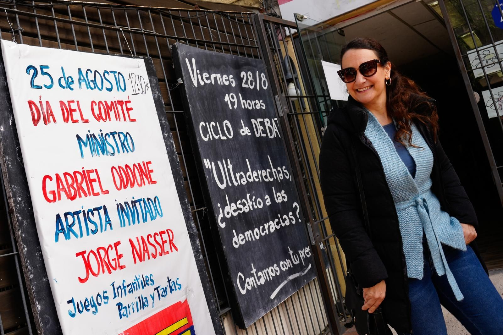

Pereira respaldó que Uruguay cumpla la orden de la CPI contra Netanyahu
El presidente del Frente Amplio apoyó la posición de Valeria Csukasi y sostuvo que el país debe respetar sus compromisos internacionales. No existe una visita prevista del primer ministro israelí.
Leer la noticia completa